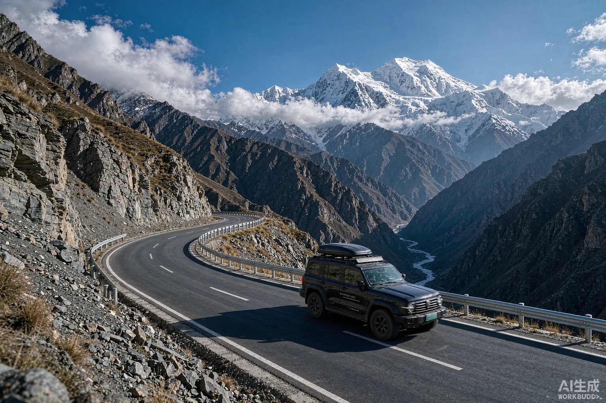
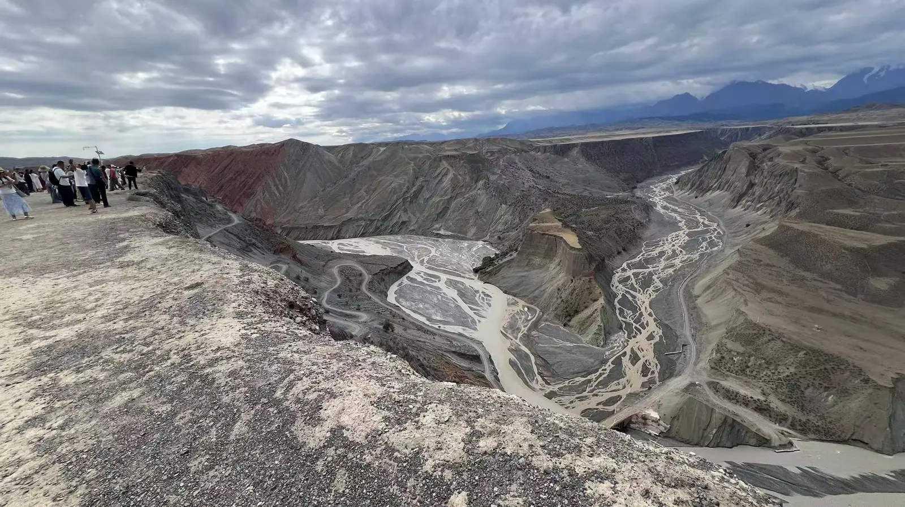
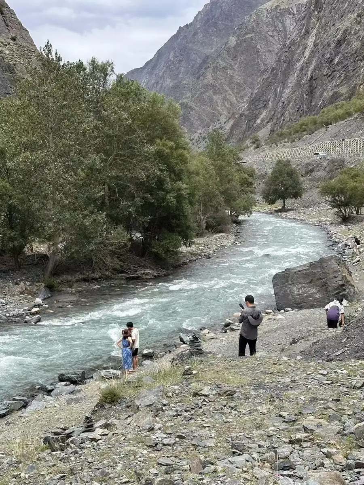
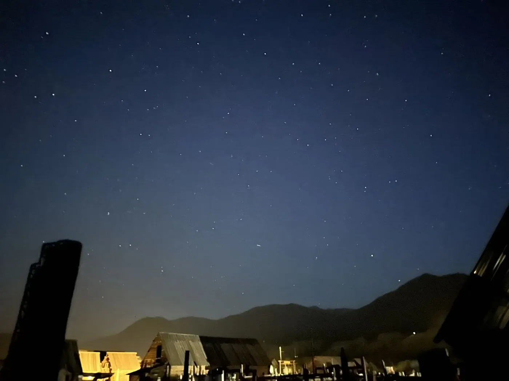
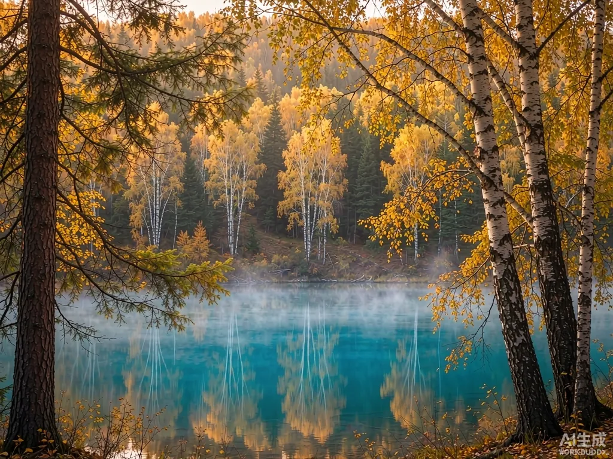

選風格
北疆風光、南疆人文、攝影、家庭、情侶……先告訴我們你想要什麼。
不是選套餐，而是從零為你寫一本路書。三步就好，剩下的交給我們。
北疆風光、南疆人文、攝影、家庭、情侶……先告訴我們你想要什麼。
幾人成行、幾天假期、喜歡的節奏，我們幫你排出最順的動線。
專屬司機＋導遊，為你量身寫一份不趕路、不進店、隨停隨拍的行程。
這是我們最常被點名的方向。你喜歡哪個，我們就從那裡開始為你改寫。
不是標準化行程表，而是一段為你而寫、有人全程照應的邊疆敘事。

在地司機與車隊 · 實景本地資深司機掌舵，隨車中文導遊全程陪同。安全、舒適、深度，帶你走進一個真實的新疆。
專屬微信群裡有司機、導遊與客服。溝通順暢、遇事不慌，安心感來自被看見。
依你的步調隨時停拍，把時間還給風景，把決定權還給你。
四季更迭，處處皆風景——這些畫面，等你親自走進。




原本以為只是包車，結果是一場被照顧得很好的旅行。司機像老朋友，導遊比我們還懂新疆。
—— 林女士 · 2026 伊犁河谷 10 日出發前最常被問到的幾個問題，先在這裡說清楚。
新疆幅員遼闊，景點之間距離極遠，公共交通非常不便。包車旅遊才是最佳選擇——自由度高、安全舒適，還能隨時停車拍照。
非常安全。新疆是中國治安最好的地區之一，隨處可見警察巡邏站，對遊客保護措施完善。我們的司機均為本地資深司機，熟悉路況與安全資訊。
北疆最佳：6-9月（草原綠、湖泊藍）；南疆全年皆宜，4-6月與9-10月最佳（避開酷暑）；冬季則可享受阿勒泰滑雪與喀納斯雪景。
北疆環線建議 8-10 天；南北疆聯遊建議 12-15 天；若時間有限，可選擇伊犁 6-7 天或喀什周邊 5-6 天。